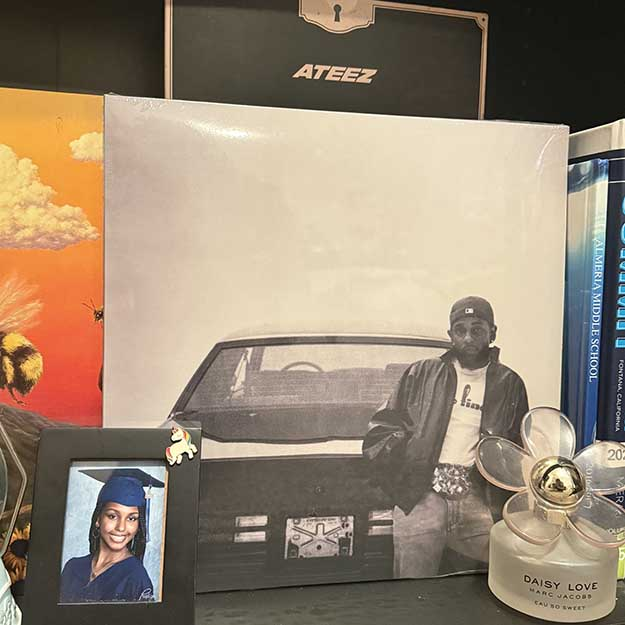
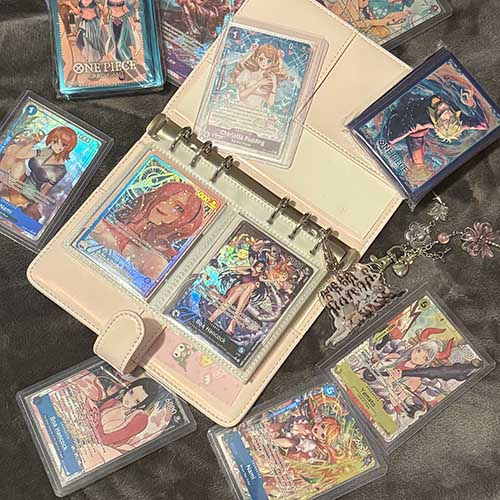

my favorite things.
some top five favorites of mine!
top five animations:
-
Ponyo
I love Studio Ghibli Films, and this one is my absolute favorite. :] I love Ponyo's story, message and of course, the animation.

-
Jujutsu Kaisen
One of my favorite animes! I love the characters and art direction.
-
Spider-Man: Into the Spider-Verse
Hands-down one of the best animated movies out there. Aside from how much I love Spider-Man and the Spider-verse series, the art direction for this movie is amazing. I love the soundtrack, too!
-
ONE PIECE
I love ONE PIECE! It's my top favorite anime series of all time. It's pretty special to me because of the messages and themes within the series, as well as how I've been able to bond and connect with other people through a shared love for One Piece.
-
Haikyuu!!!
Haikyuu was one of the first mangas I've ever read, and was partly responsible for enabling my now immense love for anime and manga. It’s a really great sports anime that I think anyone, even non-anime watchers, would enjoy.
five collection highlights:
-
The Shelf
I love my entire collection shelf, but my favorite section is the top two, which hold a small part of my manga collection and my collection of merchandise for the K-Pop girl group, LE SSERAFIM. I’ve been working on these collections the hardest and for the longest out of all my collections, so I truly do treasure these.
-
Signed LE SSERAFIM Postcards
Some postcards signed persoanlly by Eunchae and Sakura of LE SSERAFIM, South Korean Girl-group. They're my very favorite girl group, so it's so cool to have signed postcards from them!

-
Kendrick Lamar - GNX Vinyl
My first press GNX Vinyl by Kendrick Lamar. He's one of my favorite artists, so I was super stoked when I managed to snag one of these vinyls from his official merch store. The disc is a beautiful white, and I absolutely love this album, so it's definitely a highlight of my collections.

-
ONE PIECE Trading Cards
I love ONE PIECE! It's my top favorite anime series of all time. It's pretty special to me because of the messages and themes within the series, as well as how I've been able to bond and connect with other people through a shared love for One Piece.
-
JJK Gojo Funko Pop
My Chalice Collectibles Collectors Exclusive Gojo Funko Pop! :D I bought this while on vacation in the Philippines (don’t ask me how much for). I have really happy memories from when I bought this, and from my trip there, so I really treasure this figure. :]